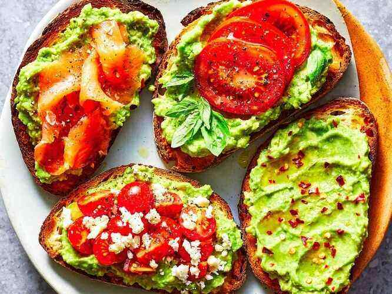
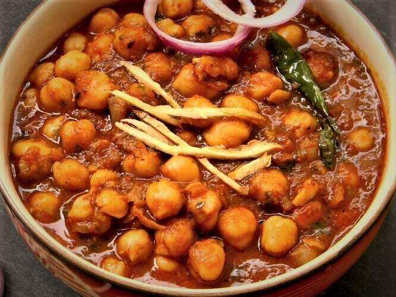
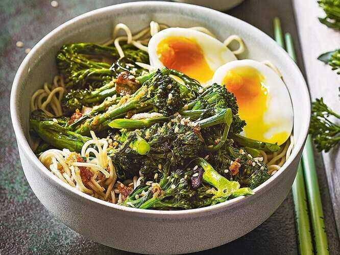

Avacado Toast
If you have great tomatoes on hand, this is delicious. Top your avocado toast with sliced tomato, add a light drizzle of high-quality thick balsamic vinegar or designated balsamic glaze, and some torn fresh basil leaves.
Chhole
This Chana Masala, also known as Chole Masala, is an authentic North Indian style curry made with white chickpeas, freshly powdered spices, onions, tomatoes and herbs. Naturally vegan and packed with healthy minerals, protein and fiber, this delicious vegetarian meal can be ready in just 45 minutes minus the soaking time of chickpeas.
Veg Egg Noodles
Jazz up basic ramen noodles with toasted sesame oil, quick-cooked broccoli and a jammy soft-boiled egg. To cut back on sodium, look for ramen varieties with less than 600 mg sodium per serving or use less of the seasoning packet.